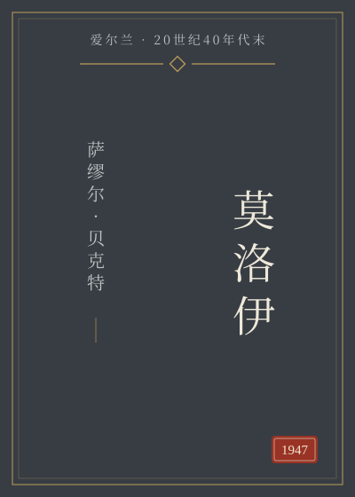
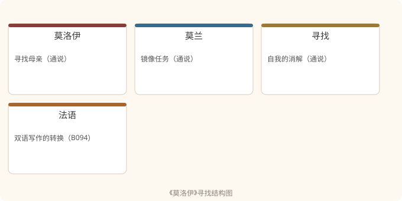

莫洛伊
一、基本信息
| 作者 | 贝克特 |
|---|---|
| 成书/出版 | 写成于1947-50年（作者页 B094：莫洛伊三部曲 1947—50——出版年待核） Samuel Beckett — Encyclopaedia Britannica (by Martin J. Esslin)（百科全书） |
| 国别/地区 | 爱尔兰 |
| 时代 | 现当代 · 20世纪40年代末 |
| 体裁 | 长篇小说 |
| 语言 | 法语 |

《莫洛伊》寻找结构图（主题·结构图）
二、创作背景
作者页（B094）：贝克特——英法双语写作、1969诺奖；'莫洛伊三部曲（1947—50）'——法语小说三部曲（B094 注记）。
作者页（B094）：贝克特'his most celebrated play'为《等待戈多》(1953)——小说三部曲与戏剧并置。
题材（通说待核）：莫洛伊寻找母亲/主人公寻找自我的旅程——'寻找'的解构。
三、内容脉络
莫洛伊的旅程：寻找母亲（通说待核——B094未载细节）。
莫兰寻找莫洛伊的镜像任务（第二部结构通说待核）。
四、主要人物表
| 人物 | 身份 | 说明 |
|---|---|---|
| 莫洛伊 | 流浪者 | （B094 书名人物） |
| 莫兰 | 侦探/镜像 | （通说待核，B094未载） |
五、主题与艺术特点
- '寻找'的自我消解（通说待核）。
- 语言与记忆的贫困化（通说待核——B094 语境：荒诞派）。
- 法语写作的自我转换（B094：英法双语写作）。
六、影响与评论
- 作者页：莫洛伊三部曲——贝克特小说代表作（B094 注记）。
Samuel Beckett — Encyclopaedia Britannica (by Martin J. Esslin)（百科全书） - 作者页：1969诺奖；荒诞派戏剧代表（B094）。
Samuel Beckett — Encyclopaedia Britannica (by Martin J. Esslin)（百科全书）
七、阅读建议
难点
- 贝克特式的重复与消解。
- 三部曲的阅读顺序（莫洛伊→马龙之死→不可名状者——通说待核）。
- 《莫洛伊》中译本（湖南文艺《贝克特选集》等——通说待核）。
- 法文原版。
贝克特小说首选；与《等待戈多》对读。
八、待核实
- 出版年（1951年巴黎法文版说）待核。
- 莫兰人名与三部曲结构核对（B094未载细节）。
- 1958年英文译本（Beckett自译说）待核。